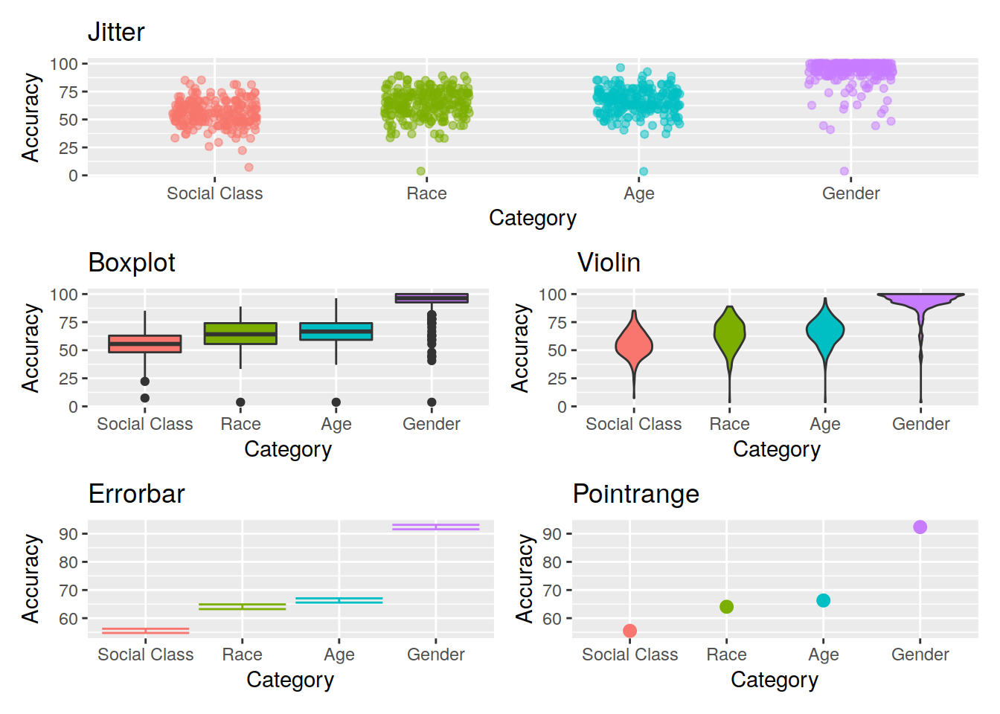
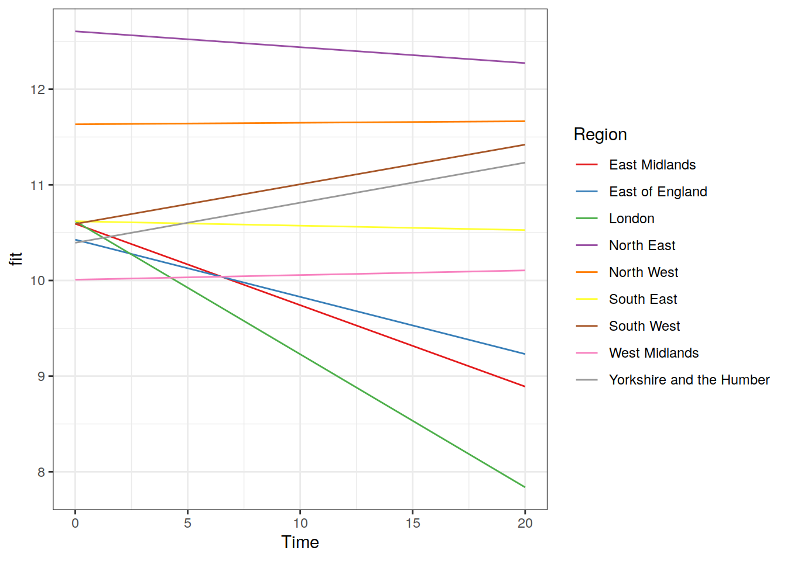
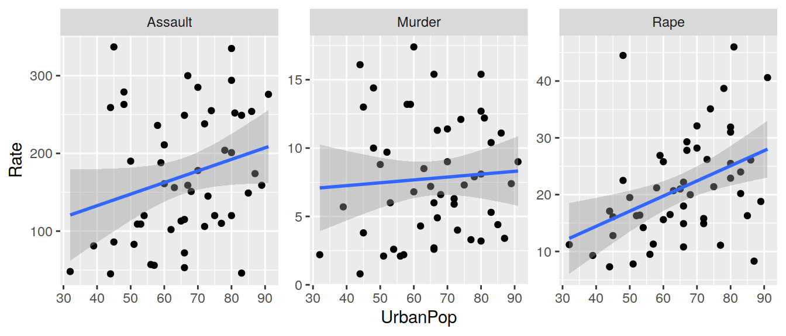
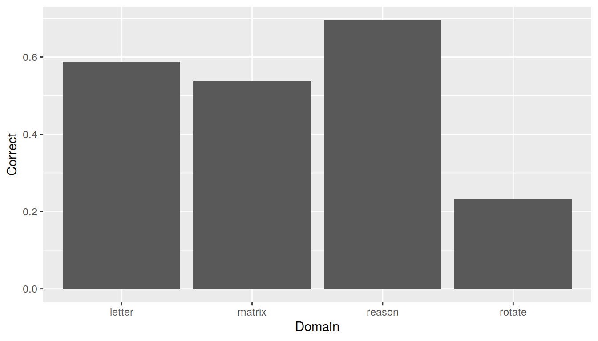

Week 1: Tidyverse & Markdown
This week, we’re going to introduce you to some really nice packages and tools which will help you to make your analysis and reporting more efficient, aesthetically pleasing, and (importantly) reproducible.

Task: If you haven’t previously installed them, install the following packages:
* tidyverse
* rmarkdown
* haven (this one is just for reading in data from other software like SPSS or SAS)
Background & Reading
R for Data Science: https://r4ds.had.co.nz/index.html
- Data visualization: Chapters 3 and 28
- Data management (tidyverse): Chapters 5 and 12
- R Markdown: Chapter 27
1.4 Data Visualization with ggplot
For plotting, you may be familiar with the popular ggplot2 package from some of the USMR labs last semester. We’re going to be using this more and more, so the first part of today’s lab will focus on ggplot.
Visualization is the first step in analysis
Geoms
To learn about some of the different functionalities of ggplot, we’re first going to need some data…
Task: Load the ggplot2 package, read in the data using load() and url() from https://uoe-psychology.github.io/uoe_psystats/multivar/data/Kraus_etal2019_Study1.Rdata and extract some summary statistics.
Data overview
Kraus et al. (2019) Evidence for the reproduction of social class in brief speech, Proc. Natl. Acad. Sci. U.S.A. (Study 1)
- N=189 speakers from the International Dialects of (North American) English Archive. Narrative speech and reading stories.
- Extracted 7 individual words that were produced by all speakers: “And”, “From”, “Thought”, “Beautiful”, “Imagine”, “Yellow”, and “The”.
- Participants (N=229, from AMT)
- Listened to the 7 one-word clips
- Estimated the speaker’s race, gender, age, and educational attainment
- Each participant completed this for a random subset of 27 speakers
Task: Make a summary plot showing mean accuracy for each category of judgment
hint: try ?stat_summary
#one way of doing this:
ggplot(speech_ses, aes(x = Category, y = Accuracy, fill = Category)) +
stat_summary(fun=mean, geom="bar")
Task: Explore the different ways of showing variability. Construct a plot using each of the following geoms:
# * Boxplot
ggplot(speech_ses, aes(x = Category, y = Accuracy, fill = Category)) +
geom_boxplot()
# * Jitter
ggplot(speech_ses, aes(x = Category, y = Accuracy, colour = Category)) +
geom_jitter(width=0.2, alpha=0.5)
# * Violin plot
ggplot(speech_ses, aes(x = Category, y = Accuracy, fill = Category)) +
geom_violin()
# * Errorbar
ggplot(speech_ses, aes(x = Category, y = Accuracy, colour = Category)) +
stat_summary(fun.data=mean_se, geom="errorbar")
# * Pointrange
ggplot(speech_ses, aes(x = Category, y = Accuracy, colour = Category)) +
stat_summary(fun.data=mean_se, geom="pointrange")
Task: Combine two of the geoms used above to create a visualization of the mean accuracy, a measure of variability, and all of the data points.
ggplot(speech_ses, aes(x = Category, y = Accuracy, colour = Category)) +
geom_jitter(width=0.2, alpha=0.5) +
stat_summary(fun.data=mean_se, geom="errorbar",
colour="black", width=0.4, size=1.5)Task: Refine the plot by, for example, removing unnecessary elements, adding useful annotations (e.g., chance performance = 50%), selecting a good color scheme, etc.
tip: This is where google becomes really helpful, for example
ggplot(speech_ses, aes(x = Category, y = Accuracy, colour = Category)) +
geom_jitter(width=0.2, alpha=0.5) +
stat_summary(fun.data=mean_se, geom="errorbar",
colour="black", width=0.4, size=1.5) +
guides(colour = FALSE) + theme_bw() +
scale_color_brewer(palette = "Set1") +
geom_hline(yintercept=50, linetype="dashed")
Recreating a plot
Task: Pick one of the graphs below, and recreate it using ggplot (if you like, try to make it better!).
Option A

Women in computer science
The .csv can be downloaded from LINK.
women_cs<-read.csv(url("LINK"))
ggplot(women_cs, aes(x=date, y=pct_women_majors, color=field))+
labs(x=NULL,y=NULL, title="What happened to women in computer science?")+
geom_line()+
scale_color_manual(values=c('#11605E', '#17807E', '#8BC0BF','#D8472B'))+
scale_y_continuous(label=scales::percent)+
theme_minimal(base_family="Helvetica")+
theme(legend.title=element_blank())
# If you want to get fancier, and add the labels at the end of the lines, check out the gghighlight package!1.5 Data management with the Tidyverse
A collection of R packages known as the tidyverse provides so many incredibly useful functions that can speed up your workflow. They are often contrasted to Base R (which is what you have been working with so far) in that they provide an alternative grammar which is aimed at being more predictable and consistent. Some people find the tidyverse a lot more intuitive, but others don’t, and the transition can sometimes be difficult!
Piping!
It may look a bit weird (%>%), but the pipe operator in R is incredibly useful. Its fundamental role is to ‘chain’ functions together. Previously we wrapped functions around one another, with lots of brackets, but with %>% we can link the intermediate output of one function and take it as the input of another.
The two functions f and g, when used in combination like g(f(x)), can now be written as x %>% f() %>% g(). You don’t even always need the brackets, and coulde write x %>% f %>% g!
The default behaviour of %>% is to put the output of the LHS (left hand side) in as the first argument in the RHS. However, you can change this by using %>% in combination with a ., to specify which argument you want it to be inputted as:
100 %>% rnorm(10, ., 1)is equal tornorm(10, 100, 1)- The default behaviour:
100 %>% rnorm(0, 1)is implicitly saying100 %>% rnorm(., 0, 1), which is equal tornorm(100, 0, 1).
Task: Translate the following statements between Base R and sequences of pipes. The first is shown for you.
2
Base R:
Pipes:
Grouping, summarising, filtering, mutating and selecting
Tidyverse also gives us really useful functions for wrangling data. There are many, but some of the key ones we’ll learn here are:
select()extracts columns
filter()subsets data based on conditions
mutate()adds new variables
group_by()group related rows together
summarise()/summarize()reduces values down to a single summary
For a quick example, if we want to calculate the median accuracy for each category, but only after removing those with an accuracy <50, we could use:
speech_ses %>%
filter(Accuracy>50) %>%
group_by(Category) %>%
summarise(
mdn_accuracy = median(Accuracy)
)And if we wanted to also calculate the mean accuracy for each category, we could add:
Task: Load the tidyverse, and haven package, and read in the data using read_sav() (.sav is the type of file which comes out of another stats software, SPSS). The data is online, which means you can use url() again!
Using the exam.sav data:
Task: Calculate the mean score for each exam
## # A tibble: 3 x 2
## exam M
## <dbl> <dbl>
## 1 1 42.9
## 2 2 37.9
## 3 3 38.9Task: Calculate the mean score for each exam for female students only
## # A tibble: 3 x 2
## exam M
## <dbl> <dbl>
## 1 1 43.1
## 2 2 36.6
## 3 3 38.1Task: Make a new dataframe containing only the exam scores for males for exam number 1, with a new variable indicating whether they passed or not (pass = a score of 40)
exam_m1 <- exam %>%
filter(exam == 1, gender == "m") %>%
mutate(pass = ifelse(scores>40,"pass","fail"))Task: Calculate the average score for each exam for male and female students
## # A tibble: 6 x 3
## # Groups: exam [3]
## exam gender M
## <dbl> <chr> <dbl>
## 1 1 f 43.1
## 2 1 m 42.7
## 3 2 f 36.6
## 4 2 m 39.1
## 5 3 f 38.1
## 6 3 m 39.7# use spread() to make it easier to compare
exam %>% group_by(exam, gender) %>%
summarize(M = mean(scores)) %>%
spread(gender, M)## # A tibble: 3 x 3
## # Groups: exam [3]
## exam f m
## <dbl> <dbl> <dbl>
## 1 1 43.1 42.7
## 2 2 36.6 39.1
## 3 3 38.1 39.7Reshaping
wide, long, “tidy” data..
Data overview
The USArrests data set (comes with R) contains violent crime arrests (per 100,000 residents) in each of the 50 states in the USA in 1973 and the percent of the population of each state that lived in urban areas.
You can see it by just typing USArrests in R.
Task: Convert the USArrests data set from a wide to a long format so that instead of separate variables for each crime type (Murder, Assault, Rape), there is one variable that identifies the crime type and one variable that contains the rates for each crime type for each state.
Task: Make a scatterplot showing the relationship between each type of violent crime rate and percent of population living in urban areas.
ggplot(x, aes(UrbanPop, Rate)) +
facet_wrap(~CrimeType, scales="free", nrow=1) +
geom_point() + stat_smooth(method="lm")## `geom_smooth()` using formula 'y ~ x'
Less guidance
Data overview
The ability data set in the psych package contains accuracy of 1525 subjects on 16 multiple choice IQ-test-type questions. The questions are of 4 types: basic reasoning, letter sequence, matrix reasoning, and spatial rotation. There are four questions of each type.
You can see the by typing psych::ability (those :: are just a way of accessing something from inside a package without loading it).
Task: Tidy the data and make a graph of average accuracy for each question type.
iq <- as_tibble(psych::ability) %>%
gather(key="Item", value="Correct", 1:16) %>%
separate(Item, c("Domain", "Number"))
ggplot(iq, aes(Domain, Correct)) +
stat_summary(fun.y = mean, geom="bar")
1.6 Reproducible research with RMarkdown
We’re also going to start to use RMarkdown. This is a really useful means of making a report reproducible. Essentially, it is a combination of R code and normal text. It will require learning a few new formatting rules (the “markdown” bit), but it means that in one file you can read in and analyse your data, and compile it to a pdf. Which essentially means that if your data or analysis changes, then the results you report change too without having to edit them!
1.6.1 Convert a script into a R Notebook
Open your script from the exercises so far. Compile a HTML report from that script.
Task: Create a new R Notebook file, fill it in with the content of your script from the exercises so far.
Hint: R code goes into R chunks, add some text in between chunks.
- Add formatting to make it look nicer: headers, bold, italics, etc (see the cheat-sheet)
- Add chunk options to suppress extraneous messages and warnings, and to control the size of figures.
Task: Knit the notebook into a HTML file.